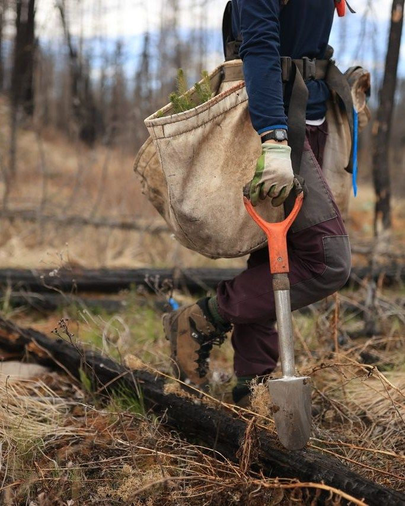
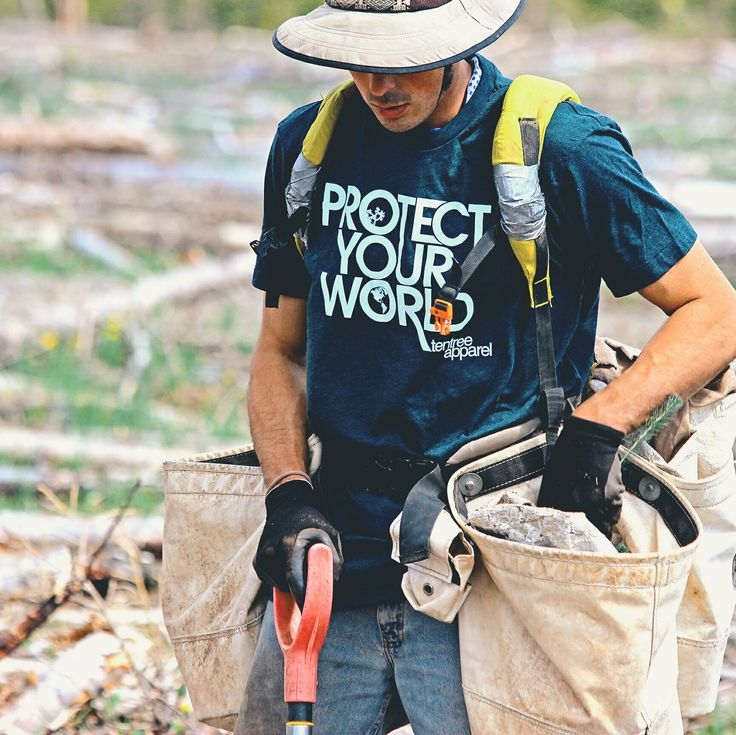
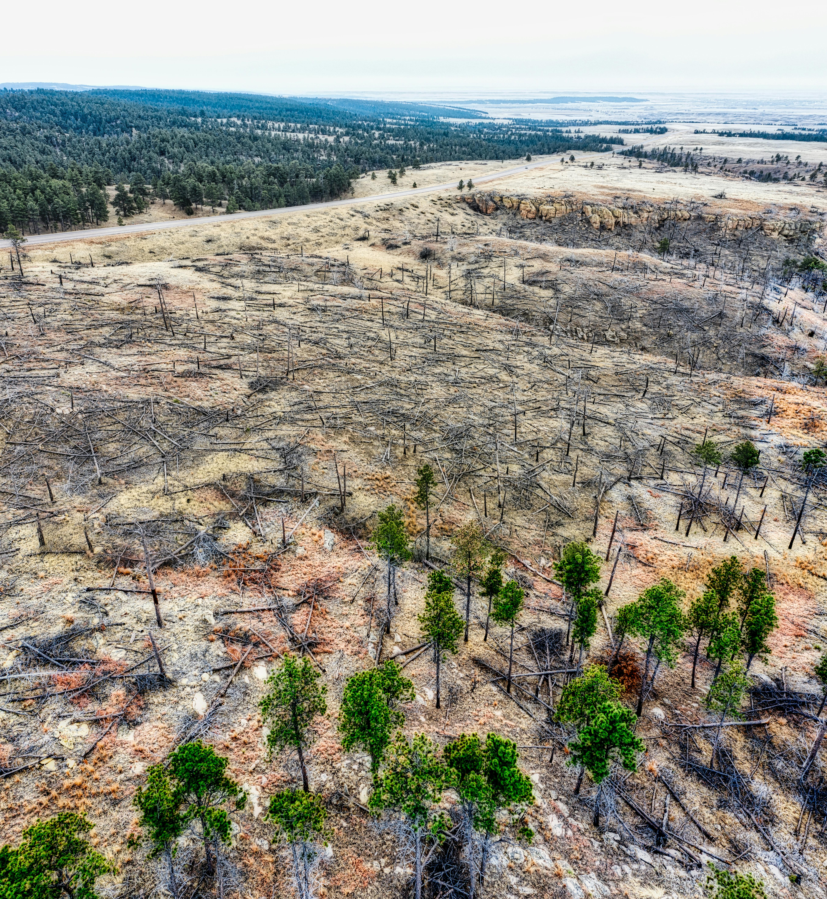

PROYECTOS
Restauración Activa en Suelos de Ceniza


Devolviendo el verde a las laderas del Piltriquitrón y zonas aledañas.


Renacer de la Comarca: Reforestación Post-Incendio
Este proyecto nace como respuesta directa a los incendios que han afectado las zonas de interfase y bosque nativo en El Bolsón. Nuestra labor se centra en la plantación estratégica de especies pioneras y estructurantes como el Coihue, el Ñire y el Ciprés de la Cordillera. Al intervenir en áreas devastadas por el fuego, aceleramos el proceso de sucesión natural que, de otra forma, tardaría décadas, ayudando a fijar nuevamente el suelo y evitando que las cenizas y sedimentos se laven con las lluvias invernales hacia los valles.
La clave de nuestra intervención es el uso de plantines producidos con semillas locales, recolectadas de los "árboles abuelos" que sobrevivieron a las llamas para preservar la genética de la zona. Además de la plantación, el proyecto incluye tareas de limpieza de material combustible fino y la creación de "islas de vida" protegidas, que funcionan como núcleos de dispersión de semillas naturales. Trabajamos junto a brigadistas y vecinos voluntarios, transformando el dolor de la pérdida del bosque en una acción colectiva de esperanza y recuperación ecosistémica.